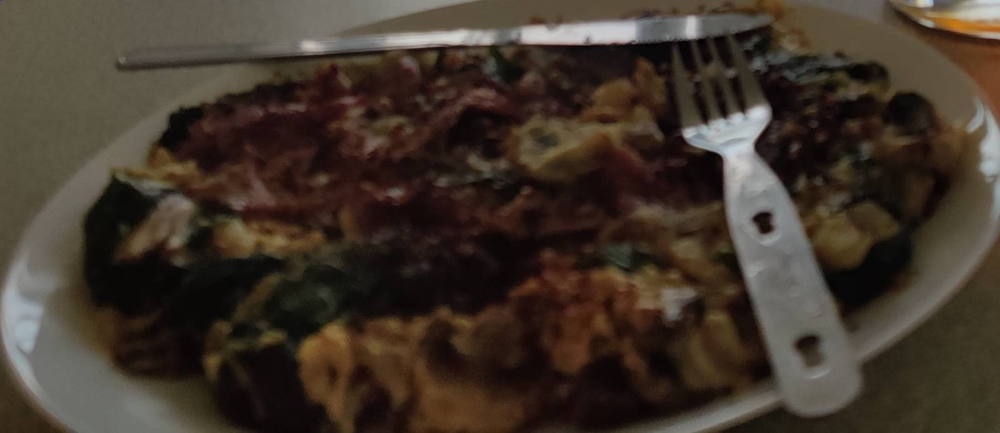

Breakfast Omelette

Description
This is a recipe for a breakfast omelette.
This recipe is simple and quick to make.
This recipe is healthy because it contains lots of protein and healthy fats while not being very high in Calories. The contents of your omelette can be adjusted to your own tastes.
Ingredients
- eggs ~4 large
- a source of fat:
- cooking oil spray (1 cal per spray)
- butter
- olive oil
- other fat source
- no fat in a good non stick pan
- omelette fillings
- onion
- mushrooms
- sweet peppers
- chillies
- spinach
- bacon
- asparagus
- salmon
- avocado
- salsa
- spring onions
- other fillings of choice
- salt flakes
Steps
- Put your non-stick cooking pan with a lid on a low heat.
- Scramble the eggs in a bowl until smooth and no homogeneous parts of yolk or albumen remain.
- Chop up and prepare your omelette fillings.
- Add your egg mixture to the pan.
- Immediately start dragging the the external parts of the omelette towards the centre of the pan using a spatula. Once you've done so, reform the omelette's shape by tilting the pan to refill the displaced egg with new liquid egg mixture.
- Once the previous step becomes hard to do because there isn't enough liquid egg mixture to refill the gaps easily it's time to add your filling to the omelette.
- Fill half of your omelette up with your fillings.
- Help yourself with a spatula to close your omelette in the shape of a half moon. The omelette should contain the fillings in a similar fashion to a calzone or cornish pasty.
- Once you've close your omelette place a lid on the pan to seal it shut and then remove the omelette from the heat by taking it out of the pan.
- The last step should be executed quickly as we don't want to over-cook the eggs. This is achieved by performing all steps quickly and making sure to keep the cooker heat low.
- Use salt flakes and other preferred seasonings to season your omelette to perfection.